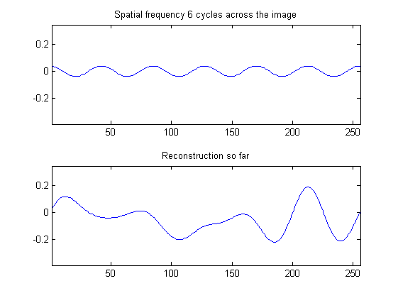
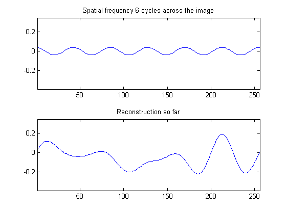
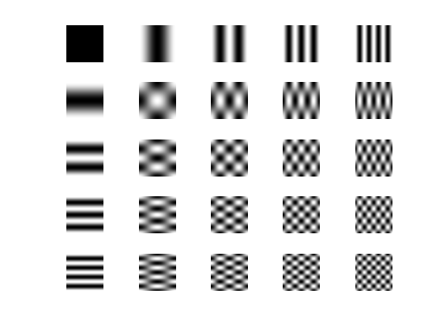

Fourier Transform Demonstration
David Young
A demonstration of the Discrete Fourier transform applied to 1-D and 2-D data.
Contents
Read in an image and display it
The Sussex vision library must be in the Matlab path - see intro_demo.
% Read an image, truncate it to dimensions that are fast for the FFT, and % zero-mean it in order to avoid a big peak in one corner of the FFT array. fftim = teachimage('chess1.bmp'); fftim = fftim(1:2:384, 1:2:512); fftim = fftim - mean(mean(fftim)); % Get its range so that display can be consistent. range = [min(fftim(:)) max(fftim(:))]; f1 = figure; imshow(fftim, range);
Get a 1-D profile
Extract one row from the middle of the image to use to illustrate 1-D operations.
row = round(size(fftim,1)/2); % Show the selected row figure(f1); hold on; plot([1 size(fftim,2)], [row row], 'r-'); hold off % Extract the row x = fftim(row, :); % Display the grey-level profile figure; plot(x); title('Grey-level profile');
Fourier components of 1-D data
Compute the transform of the profile and display the spectrum.
The spectrum is symmetric about its mid-point because the data are real. Thus low spatial frequencies are at the ends, and high frequencies in the middle.
X = fft(x);
figure; plot(abs(X)); title('Amplitudes as a function of frequency');
Display individual Fourier components
... together with a reconstruction that includes components at the current and lower spatial frequencies.
We used fft to get the amplitudes of the components. Normally to reconstruct we would use ifft, but here we compute the individual components explicitly so that we can look at them, and we add them up explicitly to gradually reconstruct the original profile.
At the end of the loop, the reconstructed result is the same as the original profile, but on the way we see reconstructions with high frequencies missing.
figure; mn = min(x); mx = max(x); % Initialise. The starting point for the reconstruction is the % "zero-frequency" or constant component held in X(1). N = length(x); reconstruction = X(1)/N; p = 2*pi*(0:N-1)/N; for k = 1:N/2
% Compute the component for the frequency that gives k cycles in the % width of the image. a = X(k+1); phi = k*p; % We take advantage of the symmetry that results from x being real to % ignore the top half of X. We therefore need to double the % intermediate components. if k < N/2; s = 2; else s = 1; end component = s*(real(a)*cos(phi) - imag(a)*sin(phi))/N; % and add the component to the reconstruction so far reconstruction = reconstruction + component; % Plot the results, but not for every iteration if ismember(k, [1:7 8:16:63 64:32:N/2]) subplot(2,1,1); plot(component); axis([1 length(x) mn mx]); title(['Spatial frequency ' num2str(k) ' cycles across the image']); subplot(2,1,2); plot(reconstruction); axis([1 length(x) mn mx]); title('Reconstruction so far'); pause; end
 
 end
Filtering the profile
We can apply filters by multiplying the transform by a set of weights and then transforming back. This is equivalent to convolving the original profile with a mask that is the transform of the set of weights.
For example, we pick out low frequencies, middle frequencies and high frequencies with three band-pass Gaussian masks. We have to make sure the symmetries are maintained in the masks.
figure; % A low-frequency mask, centred on zero-frequency mask = zeros(1, N); f = 0:N/2; sigmaf = 10; mask(1:N/2+1) = exp(-(f/(2*sigmaf)).^2); mask(N:-1:N/2+2) = mask(2:N/2); subplot(3,1,1); plot(mask); title('Low-pass mask'); % Multiply the FT by the mask Xfilt = X .* mask; subplot(3,1,2); plot(abs(Xfilt)); title('Weighted transform'); % Transform back xfilt = ifft(Xfilt); subplot(3,1,3); plot(xfilt); title('Low-pass filtered signal');
Shift the mask to make a mid-frequency mask
cfreq = N/4; % Centre frequency in cycles/width of image mask(1:N/2+1) = exp(-((f-cfreq)/(2*sigmaf)).^2); mask(N:-1:N/2+2) = mask(2:N/2); subplot(3,1,1); plot(mask); title('Mid-pass mask'); Xfilt = X .* mask; subplot(3,1,2); plot(abs(Xfilt)); title('Weighted transform'); xfilt = ifft(Xfilt); subplot(3,1,3); plot(xfilt); title('Mid-pass filtered signal');
and to make a high-frequency mask
cfreq = N/2; % Centre frequency in cycles/width of image mask(1:N/2+1) = exp(-((f-cfreq)/(2*sigmaf)).^2); mask(N:-1:N/2+2) = mask(2:N/2); subplot(3,1,1); plot(mask); title('High-pass mask'); Xfilt = X .* mask; subplot(3,1,2); plot(abs(Xfilt)); title('Weighted transform'); xfilt = ifft(Xfilt); subplot(3,1,3); plot(xfilt); title('High-pass filtered signal');
Display 2-D Fourier patterns
Compute and display the 2-D patterns that are the equivalent of the sine wave components in 1-D. The FT of an image involves breaking it down into these plaid patterns.
This displays only the low-frequency patterns. We generate them by applying the inverse 2-D FT to a "delta-function" spectrum - that is, a spectrum which is non-zero at only one point. (They could also be computed by calls to sin and cos.)
figure; s = 256; imsz = 5; for i = 1:imsz for j = 1:imsz subplot(imsz, imsz, (i-1)*imsz+j); y = zeros(s); y(i, j) = 1; % Set one frequence non-zero. % As with the 1-D transform, we need to make this symmetrical to % ensure the result is real if i > 1; y(end+2-i, j) = 1; end if j > 1; y(i, end+2-j) = 1; end if i > 1 && j > 1; y(end+2-i, end+2-j) = 1; end f = ifft2(y); imshow(f, []); end end
Compute 2-D FFT of image
... and display its spectrum. We use some gamma correction to make it more visible. Note that it has a rotational symmetry.
The amplitude of each component is shown by the brightness of a pixel in the image. Low spatial frequencies are shown in the corners of the image and high frequencies are at the centre.
ft = fft2(fftim); figure; imshow(abs(ft).^0.3, []);
Reconstruct the image
We carry out a partial reconstruction of the image from the low spatial frequencies only, building it up from the patterns shown above.
This is done by performing the reverse FFT with only low frequencies included. It could also be done in the same way as the 1-D example, by explicitly computing the components and adding them in to the reconstruction.
As more spatial frequencies are added, the image becomes a closer approximation to the original.
figure; for i = 1:imsz for j = 1:imsz y = zeros(size(ft)); % Include only the low frequency components up to the current % position, maintaining the symmetry. y(1:i, 1:j) = ft(1:i, 1:j); y(1:i, end+2-j:end) = ft(1:i, end+2-j:end); y(end+2-i:end, 1:j) = ft(end+2-i:end, 1:j); y(end+2-i:end, end+2-j:end) = ft(end+2-i:end, end+2-j:end); f = ifft2(y); subplot(imsz, imsz, (i-1)*imsz+j); imshow(f, range); end end
Filter the image
As for the 1-D profile, we can filter the image by weighting the transform to de-emphasise some of the spatial frequencies. In principle this is quite simple, but there is some complexity due to the need to maintain the symmetries.
Again, we do low, middle and high frequency filtering using a Gaussian mask in frequency space.
figure; % Low frequency mask [M, N] = size(ft); mask = zeros(M, N); [fy, fx] = ndgrid(0:M/2, 0:N/2); sigmaf = 10; % Gaussian mask centred on zero frequency mask(1:M/2+1, 1:N/2+1) = exp(-(fx.^2+fy.^2)/(2*sigmaf)^2); % Do symmetries mask(1:M/2+1, N:-1:N/2+2) = mask(1:M/2+1, 2:N/2); mask(M:-1:M/2+2, :) = mask(2:M/2, :); subplot(1,2,1); imshow(mask); title('Low-pass mask'); % Filter the FT and show the result imfilt = ifft2(mask .* ft); subplot(1,2,2); imshow(imfilt, []); title('Low-pass filtered image');
Middle frequency mask
cfreq = min(M, N)/4; % Gaussian mask centred on cfreq mask(1:M/2+1, 1:N/2+1) = exp(-((fx-cfreq).^2+(fy-cfreq).^2)/(2*sigmaf)^2); mask(1:M/2+1, N:-1:N/2+2) = mask(1:M/2+1, 2:N/2); mask(M:-1:M/2+2, :) = mask(2:M/2, :); subplot(1,2,1); subplot(1,2,1); imshow(mask); title('Middle-pass mask'); % Filter the FT and show the result imfilt = ifft2(mask .* ft); subplot(1,2,2); imshow(imfilt, []); title('Middle-pass filtered image');
High frequency mask
cfreq = min(M, N)/2; % Gaussian mask centred on cfreq mask(1:M/2+1, 1:N/2+1) = exp(-((fx-cfreq).^2+(fy-cfreq).^2)/(2*sigmaf)^2); mask(1:M/2+1, N:-1:N/2+2) = mask(1:M/2+1, 2:N/2); mask(M:-1:M/2+2, :) = mask(2:M/2, :); subplot(1,2,1); imshow(mask); title('High-pass mask'); % Filter the FT and show the result imfilt = ifft2(mask .* ft); subplot(1,2,2); imshow(imfilt, []); title('High-pass filtered image');
Experimenting yourself
You can experiment with this demonstration yourself, by downloading this html document and using Matlab's grabcode function to extract the original M-file. You can then edit it to change the parameters or to try different images.
This document may be accessible from outside Sussex University, but to use functions from the local library you need to be a student or member of staff of the University.
Copyright University of Sussex, 2009